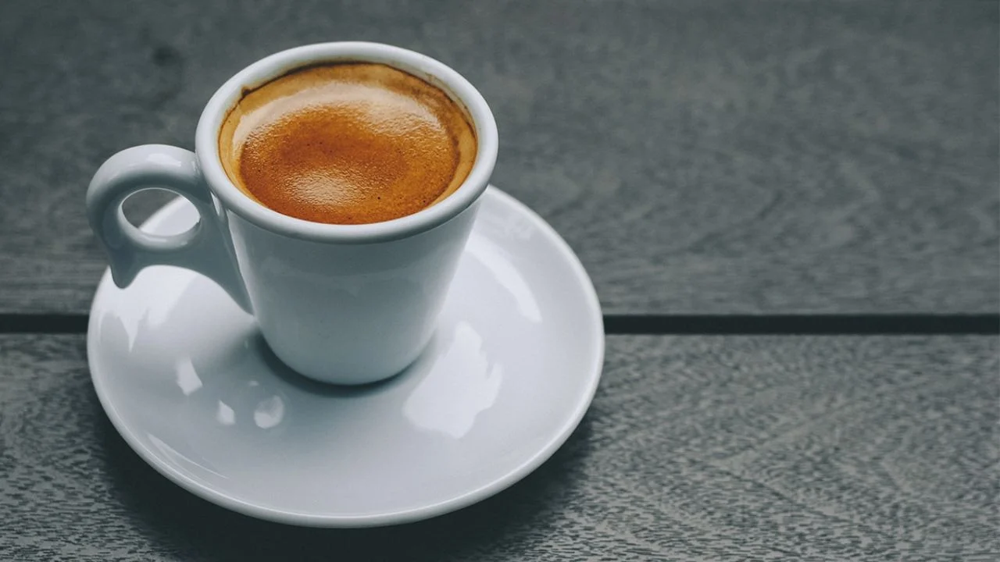
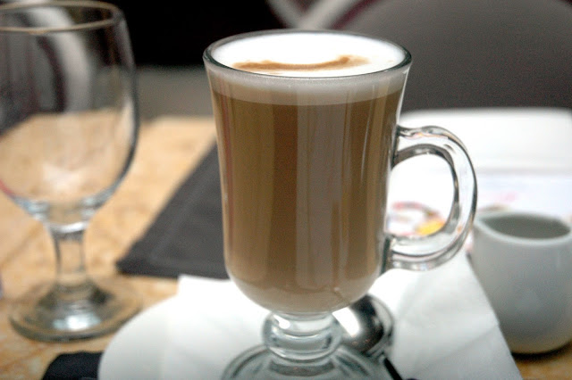
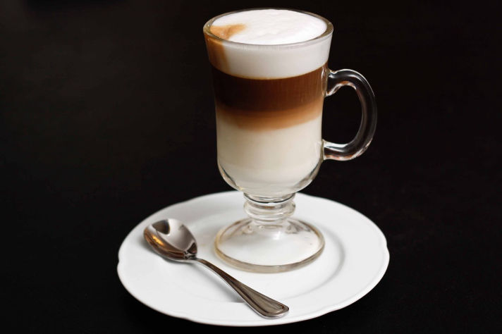

1
Americano:

El café Americano es una bebida que se prepara al añadir agua caliente a un espresso, lo que da como resultado un café más suave y menos concentrado. Se caracteriza por su sabor ligero y su aroma agradable. Es una opción popular para aquellos que prefieren un café menos intenso.
2
Espresso:
El café Espresso es una bebida concentrada que se elabora forzando agua caliente a alta presión a través de café molido fino. Se caracteriza por su sabor fuerte y su crema espesa en la parte superior. Es la base para muchas otras bebidas de café, como el capuchino y el latte.
3
Capuchino:
El capuchino es una bebida de café que combina partes iguales de espresso, leche vaporizada y espuma de leche. Se caracteriza por su textura cremosa y su sabor equilibrado entre el café y la leche. A menudo se espolvorea con cacao o canela en la parte superior.
4
Cortado:

El cortado es una bebida de café que consiste en un espresso con una pequeña cantidad de leche caliente o vaporizada. Se caracteriza por su sabor fuerte y su textura suave. Es popular en España y América Latina.
5
Latte:
El latte es una bebida de café que se elabora con espresso y leche vaporizada, con una capa fina de espuma de leche en la parte superior. Se caracteriza por su sabor suave y cremoso, y a menudo se aromatiza con jarabes o especias.